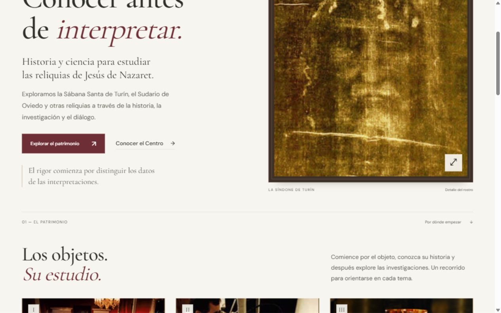

DISEÑO 01
Archivo y serenidad.
Marfil, burdeos y una composición editorial. Una portada centrada en la claridad, el estudio y el patrimonio.
Explorar la propuestaPROPUESTAS PARA EL CENTRO ESPAÑOL DE SINDONOLOGÍA
Un espacio para explorar y comparar distintas propuestas para la portada de Línteum.

DISEÑO 01
Marfil, burdeos y una composición editorial. Una portada centrada en la claridad, el estudio y el patrimonio.
Explorar la propuesta